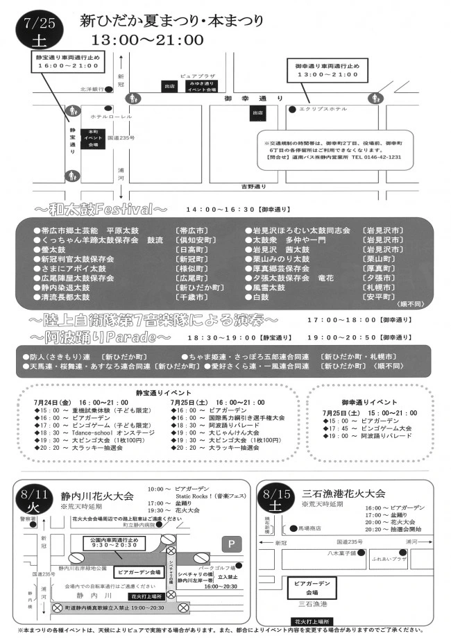

本まつり｜7月25日（土）
御幸通りは13:00〜21:00、静宝通りは16:00〜21:00の歩行者天国。和太鼓や音楽隊の演奏、18:30からの阿波踊りが案内されました。
星空ビアガーデン｜8月8日（土）
14:00〜20:45、公民館横広場での開催が案内されました。
静内川花火大会｜8月11日（火・祝）
会場は静内川右岸緑地公園。10:00からビアガーデン・音楽フェス、17:00から盆踊り、19:30から花火の案内です。
三石漁港花火大会｜8月15日（土）
会場は三石漁港。16:00からビアガーデン、17:00から盆踊り、20:00から花火、20:20から抽選会が案内されました。
当時の案内として掲載
町公式ページの更新日は8月18日で、協賛・寄附へのお礼も掲載されています。上記は公式に案内された日程で、個別プログラムの実施結果をすべて確認したものではありません。
写真・資料で知る
町公式サイト掲載の2026年チラシです。画像を押すと拡大できます。PDF資料は画像化し、文字や日付が切れないよう全体を掲載しています。

公式情報・資料の出典
Web確認日：2026年10月19日。2026年の開催記録として掲載しています。掲載画像はサイト運営者の利用許可に基づき使用しています。